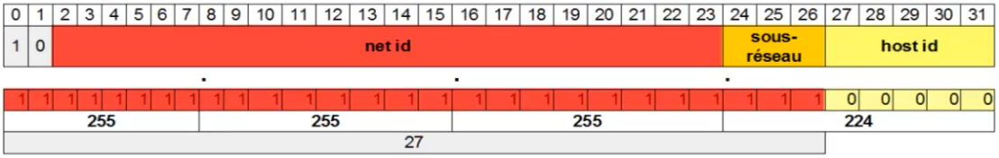

Adressage IP : Sous-réseaux IPv4 classful
Plan
• Introduction
• Fonctionnement
• Exemple
Introduction
• Le concept de classe est très limité
◇ ne permet que peu de réseaux
• pour pallier à cela, un nouveau concept est introduction en 1984
◇ RFC 917 (Internet Subnets)
◇ sous-réseaux
• Permet la subdivision logique des réseaux de taille plus importante
◇ relativement aux classes d'adresses
Fonctionnement
• Ajout d'un troisième champs
◇ entre le ned id et le host id
◇ permettant de désigner un sous-réseau
• La taille de ce champ étant variable, la division entre adresse de sous-réseau et d'hôte est faite grâce à un masque
◇ adresse IPv4 dont tout les bits correspondant à une adresse de réseau ont une valeur 1
◇ ex : 18 premiers bits = 255.255.192.0
◇ donne le sous-réseau d'un hôte par un ET logique sur son adresse
• Le nombre de sous-réseaux possible est déterminé par la formule suivante :
◇ S=2^n - 1 car l'adresse de broadcast (tout à 1) n'est pas utilisable
▪ où n est le nombre de bits masqués en plus de ceux du net id
• Le nombre d'hôtes possible est déterminé par la formule suivante :
◇ S= 2^n-2 car ni l'adresse de broadcast ni l'adresse de réseau ne sont utilisables
▪ où n est le nombre de bits restant pour le host id
Exemple
• Un administrateur souhaite diviser le réseau 192.56.61.0 dont il a la charge en 4 sous-réseaux
◇ réseau de la classe C : 8 bits disponibles
◇ 3 = 2^2-1 < 4 <= 2^3-1= 7
▪ il aura donc besoin de 3 bits pour le sous-réseaux
◇ soint un masque de 27 bits

• Les adresses de sous-réseaux seront donc celles dont le dernier octet est égale à une addition de 2^5 (32) ou 2^6 (64) ou 2^7 (128)
◇ ex : l'adresse IPv4 d'hôte 192.56.61.112 = 11000000.00110100.00111101.01110000
▪ Et masque : 255.255.255.224 = 11111111.11111111.11111111.11100000
▪ donnent l'adresse de sous-réseau : 11000000.00110100.00111101.01100000 = 192.52.61.96
• Chaque sous-réseau pourra donc avoir maximum 30 hotes
Ce qu'on a couvert
◇ Subnetting sur le réseaux IPv4 classful
▪ concept
▪ fonctionnement
- masque de sous-réseau
▪ exmemple concret